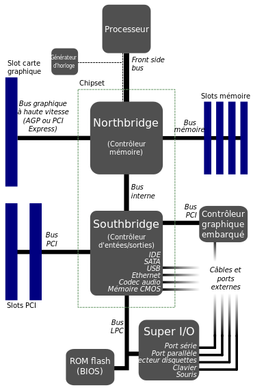

Acceuil
B11
B12
B13
Sommaire
B12- Northbridge
Puce du chipset (jeu de puces) d’une carte mère, gérant les communications entre le microprocesseur, la RAM, les ports AGP ou PCI Express, et le southbridge.
Voir une vidéo

Aller beaucoup plus loin
En savoir plus à propos des sockets